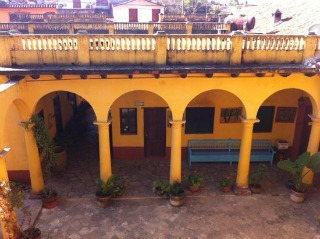
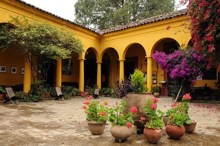
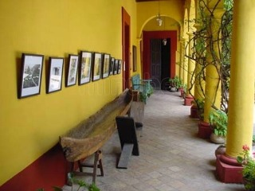
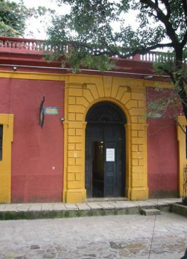
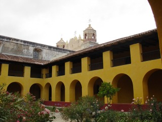

El nombre viene del idioma maya tzotzil y quiere decir "Casa del Jaguar". Es un bello edificio neoclásico construido en 1891, destinado originalmente para ser un seminario. La casa fue restaurada, amueblada y habitada por Frans Blom y Gertrude Duby con el más exquisito gusto de los más grandes coleccionistas y su profunda huella se aprecia en todos los rincones. Objetos precolombinos, etnográficos, históricos y documentales conviven en armonía con el arte en todas formas de expresión, de manera especial el popular de la región. Los árboles, plantas y construcciones han hecho de este espacio el preferido de todos los visitantes de San Cristóbal de Las Casas.
Se encuentra ubicado en la calle vicente guerrero #38 entre los barrios del cerrillo y cuxtitali.
Si usted se encuentra ubicado en la plaza de la paz viendo de frente hacia la catedral puede caminar hacia su izquierda pasando como referencia encontrará la Zapateria Catedral y Frente a este el Restaurant VIA VAI entre estos dos lugares encontrará el andador eclesiástico camine sobre el andador hasta llegar a la calle escuadron 201, agarre esa calle y camine una cuadra, al llegar a la esquina de vuelta a la izquierda y tome la Avenida General Utrilla y camine una cuadra, al llegar a la esquina de vuelta a la derecha tome la calle Comitán, camine 9 cuadras sobre la calle comitan y al llegar la esquina se encontrará con la Avenida Vicente Guerrero, de vuelta a la izquierda, camine unos pasos y justo en frente encontrará el museo Na-Bolom.
En el lugar usted puede realizar actividades como:
* Fotografía
* Visita a sitios arqueológicos
* Visita a lugares históricos
* Visita a museos





posicione el mouse sobre las imágenes